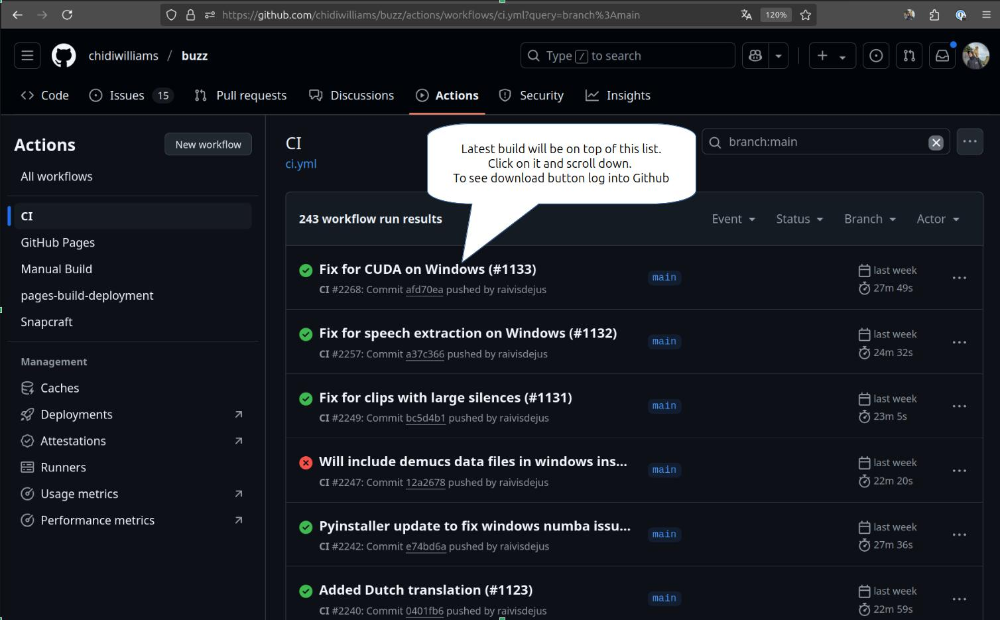

1. Where are the models stored?¶
I modelli sono archiviati:
Linux:
~/.cache/BuzzMac OS:
~/Library/Caches/BuzzWindows:
%USERPROFILE%\AppData\Local\Buzz\Buzz\Cache
Si incolla la posizione nel file manager per accedere ai modelli oppure si va su Help -> Preferences -> Models e si clicca sul pulsante Show file location dopo aver scaricato un modello.
2. What can I try if the transcription runs too slowly?¶
Il riconoscimento vocale richiede un’elevata quantità di elaborazione, quindi un’opzione è provare a utilizzare un modello Whisper di dimensioni inferiori o un modello Whisper.cpp per eseguire il riconoscimento vocale sul proprio computer. Se si ha accesso a un computer con GPU con almeno 6 GB di VRAM, si può provare a utilizzare il modello Whisper più veloce.
Buzz supporta anche l’utilizzo dell’API OpenAI per il riconoscimento vocale su un server remoto. Per utilizzare questa funzionalità è necessario impostare la chiave API OpenAI nelle Preferenze. Consultare la sezione Preferenze per maggiori dettagli.
3. How to record system audio?¶
Per trascrivere l’audio di sistema è necessario configurare un dispositivo audio virtuale e collegare l’uscita delle applicazioni che si desidera trascrivere a tale speaker virtuale. Dopodiché, è possibile selezionarlo come sorgente in Buzz. Consultare la sezione Usage per maggiori dettagli.
Strumenti pertinenti:
Mac OS - BlackHole.
Windows - VB CABLE
Linux - PulseAudio Volume Control
4. What model should I use?¶
La dimensione del modello da utilizzare dipenderà dall’hardware e dal caso d’uso. I modelli più piccoli saranno più veloci, ma presenteranno maggiori imprecisioni. I modelli più grandi saranno più precisi, ma richiederanno hardware più potente o tempi di trascrizione più lunghi.
Quando si sceglie tra modelli più grandi, si consideri quanto segue. «Large» è il primo modello rilasciato, «Large-V2» è il modello aggiornato in seguito con una maggiore precisione, considerato il più robusto e stabile per alcune lingue. «Large-V3» è il modello più recente con la migliore precisione in molti casi, ma a volte può dare allucinazioni o inventare parole che non sono mai state presenti nell’audio. Il modello «Turbo» cerca di ottenere un buon equilibrio tra velocità e precisione. L’unico modo sicuro per sapere quale modello si adatta meglio alle proprie esigenze è testarli tutti nella propria lingua.
Oltre a scegliere una dimensione del modello appropriata, è possibile anche scegliere il tipo di «whisper» [sussurro].
Whisper è l’implementazione iniziale di OpenAI, è accurata ma lenta e richiede molta RAM.
Faster Whisper è un’implementazione ottimizzata, è di ordini di grandezza più veloce del Whisper standard e richiede meno RAM. Utilizzare questa opzione se si ha una GPU Nvidia con almeno 6 GB di VRAM.
Whisper.cpp è un’implementazione C++ ottimizzata, è piuttosto veloce ed efficiente e può utilizzare qualsiasi marca di GPU. Whisper.cpp è in grado di eseguire la trascrizione in tempo reale anche su un laptop moderno con GPU integrata. Può essere eseguito anche solo su CPU. Utilizzare questa opzione se non si ha una GPU Nvidia.
L’opzione HuggingFace è un’implementazione di
Transformered è utile in quanto supporta un’ampia gamma di modelli personalizzati ottimizzabili per un particolare linguaggio. Questa opzione supporta anche la famiglia di modelli MMS di Meta AI che supporta oltre 1000 lingue del mondo, nonché gli adattamenti PEFT ai modelli Whisper.
5. How to get GPU acceleration for faster transcription?¶
Su Linux, l’accelerazione GPU è supportata fin da subito sulle GPU Nvidia. Se i problemi persistono, installare CUDA 12, cuBLASS e cuDNN.
Su Windows, il supporto GPU è incluso nel file di installazione .exe. CUDA 12 è richiesto, i computer con versioni CUDA precedenti utilizzeranno la CPU. Vedere questa nota per abilitare il supporto GPU CUDA.
6. How to fix Unanticipated host error[PaErrorCode-9999]?¶
Verificare se ci sono impostazioni di sistema che impediscono alle app di accedere al microfono.
Su Windows, verificare se Buzz ha l’autorizzazione a utilizzare il microfono in Settings -> Privacy -> Microphone.
Vedere il metodo 1 in questo video https://www.youtube.com/watch?v=eRcCYgOuSYQ
Per il metodo 2 non è necessario disinstallare l’antivirus, ma verificare se lo si può disattivare temporaneamente o se ci sono impostazioni che potrebbero impedire a Buzz di accedere al microfono.
7. Can I use Buzz on a computer without internet?¶
Sì, Buzz può essere utilizzato senza connessione Internet se si scaricano i modelli necessari su un altro computer con connessione Internet e si spostano manualmente sul computer offline. Il modo più semplice per trovare dove sono archiviati i modelli è andare su Help -> Preferences -> Models. Poi scaricare un modello e cliccare sul pulsante «Show file location». Questo aprirà la cartella in cui sono archiviati i modelli. Copiare la cartella dei modelli nella stessa posizione sul computer offline. Ad esempio per Linux è .cache/Buzz/models nella directory home.
8. Buzz crashes, what to do?¶
Se il download di un modello è incompleto o danneggiato, Buzz potrebbe andare in crash. Provare a eliminare i file del modello scaricati in Help -> Preferences -> Models e scaricali di nuovo.
Se questo non funziona, controllare il file del log per eventuali errori e segnalare il problema in modo che possiamo risolverlo. Se possibile, allegare il file di log al problema. Dalla versione 1.3.4, per accedere alla cartella dei log Help -> About Buzz e cliccare sul pulsante Show logs.
9. Where can I get latest development version?¶
L’ultima versione in sviluppo conterrà le ultime correzioni di bug e le funzionalità più recenti. Se ci si sente un po” avventurosi, consigliamo di provare l’ultima versione di sviluppo, poiché necessita di alcuni test prima di essere rilasciata a tutti.
Gli utenti Linux possono ottenere l’ultima versione con questo comando
sudo snap install buzz --edgePer le altre piattaforme, procedere come segue:
Accedere alla sezione build
Cliccare sul link all’ultima build, quella più recente completata correttamente nell’elenco
Scorrere verso il basso fino alla sezione degli artefatti nella pagina di build
Scaricare il file di installazione. Si tenga presente che si deve aver effettuato l’accesso a Github per visualizzare i link per il download.

10. Why is my system theme not applied to Buzz installed from Flatpak?¶
Per i temi scuri in ambienti Gnome, potrebbe essere necessario installare il pacchetto gnome-themes-extra e impostare le seguenti preferenze:
gsettings set org.gnome.desktop.interface gtk-theme Adwaita-dark
gsettings set org.gnome.desktop.interface color-scheme prefer-dark
Se il tema di sistema non viene applicato a Buzz installato dall’app store di Flatpak per Linux, assicurarsi che il tema desiderato si trovi nella cartella ~/.themes folder.
Potrebbe essere necessario copiare i temi di sistema in questa cartella cp -r /usr/share/themes/ ~/.themes/ e consentire a Flatpak di accedere a questa cartella flatpak override --user --filesystem=~/.themes.
Su Fedora, eseguire il comando seguente per installare i pacchetti necessari sudo dnf install gnome-themes-extra qadwaitadecorations-qt{5,6} qt{5,6}-qtwayland